The purpose of this lab is to add the IMU which is equipped with accelerometer and gyroscope to the robot to measure the real-time roll and pitch angles when the robot is running. Besides, at the end of this lab, the Artemis board and connected sensors are achieved to be powered from a battery. The datasheet of the IMU we are using provides lots of useful information which helps to measure and process roll and pitch data.
During this lab, the IMU is firstly set up to test its functions using example codes. THen, the roll and pitch angles are computed using formulas based on IMU raw data readings. Similar to previous labs, the collected data are transmitted to the computer side using BLE. Eventually, the battery is soldered to a JST connector hence to power Artemis and sensors.
Lab Tasks
Task 1: Set up the IMU
The IMU is connected to Artemis and tested using example code. The output is shown in the image below.
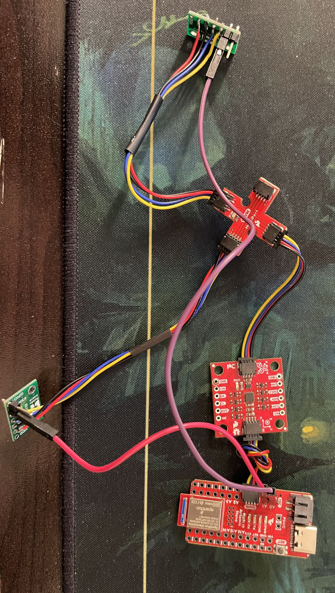 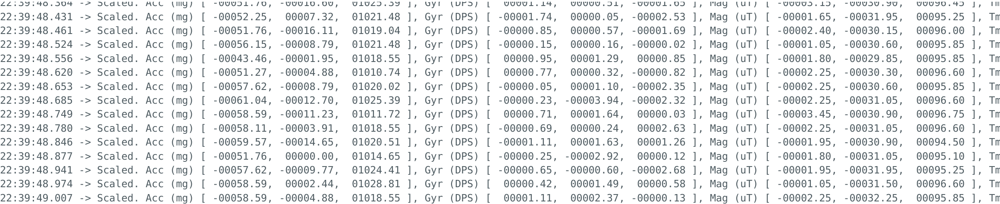 It is noticed that in the example code, the AD0_VAL PIN is defined to be 1 by default. The comment in the example code says the value can be changed to 0 when the ADR jumper is closed.
According to the datasheet of the IMU board, the slave address of the ICM-20948 is b110100X which is 7 bits long. The LSB bit of the 7-bit address is determined by the logic level on pin AD0. This allows two ICM-20948s to be connected to the same I2C bus simultaneously. When used in this configuration, the address of the one of the devices should be b1101000 (pin AD0 is logic low) and the address of the other should be b1101001 (pin AD0 is logic high).
Task 2: Accelerometer test
Based on the raw data output from accelerometer, the roll and pitch angles are calculated using the equations shown below.
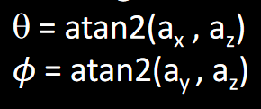The output at {-90, 0, 90} degrees for both roll and pitch angles are plotted using Serial Plotter in Arduino ide as shown below.
Accelerometer roll output:
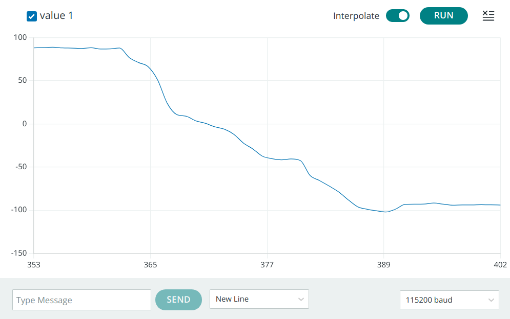Accelerometer pitch output:
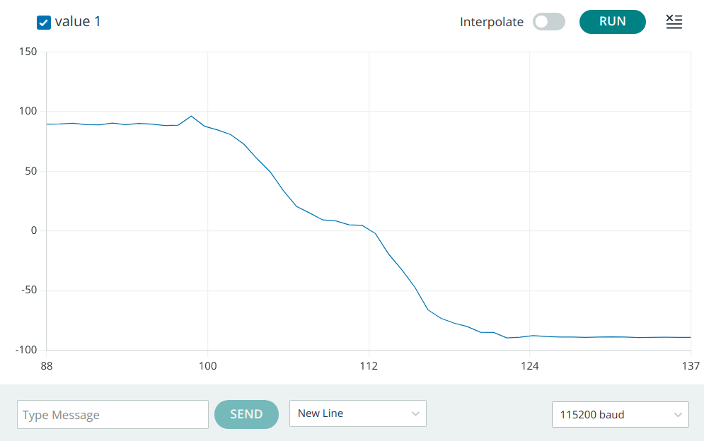The error of accelerometer measurements at these three degrees are shown in table below, where we can see the errors are basically around 1 degree which are pretty much acceptable.
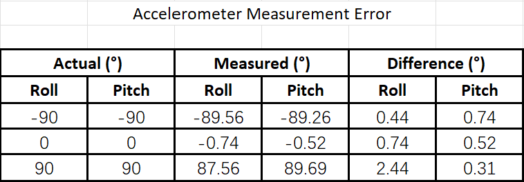To further investigate how the noise caused by nearby running RC car can affect the data collected by accelerometer, 3 seconds of "noisy" data for both roll and pitch are recorded hence to compute Fourier Transform in Python to analyse frequency spectrum.
The frequency spectrum of "noisy" roll data is shown as below.
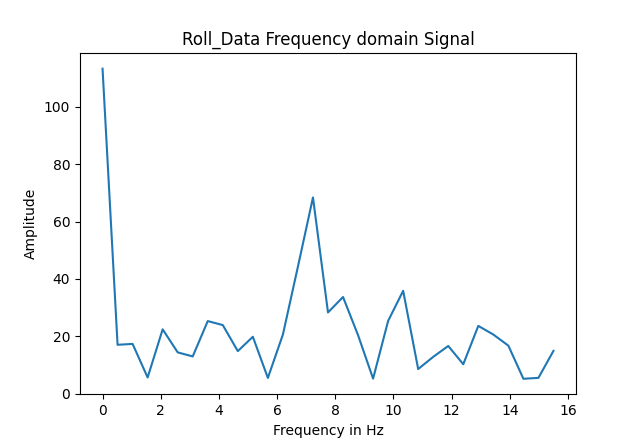Following plot shows the frequency spectrum of "noisy" pitch data.
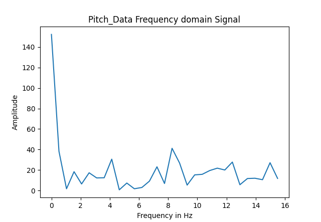The data I used are collected within 3 seconds, the number of data points collected is 94 and hence the sampling frequency can be computed as around 31 Hz. The sampling frequency is actually limited by the delay time set in the example code.
According to those two plots above, despite a spike on 0 Hz, there is only one significant spike in roll frequency spectrum at about 7 Hz, and no obvious spike in pitch frequency spectrum. According to the datasheet of IMU, this is probably because there is a low pass filter which works from 5.7 Hz to 246 Hz for accelerometer. Therefore, no need to worry about the ambient noise to affect the accuracy of data collected by accelerometer.
Task 3: Gyroscope test
Based on the raw data readings from gyroscope, the roll and pitch angles are calculated using the formulas given from lecture.
The output at {-90, 0, 90} degrees for both roll and pitch angles are plotted using Serial Plotter in Arduino ide as shown below.
Gyroscope roll output:

Gyroscope pitch output:
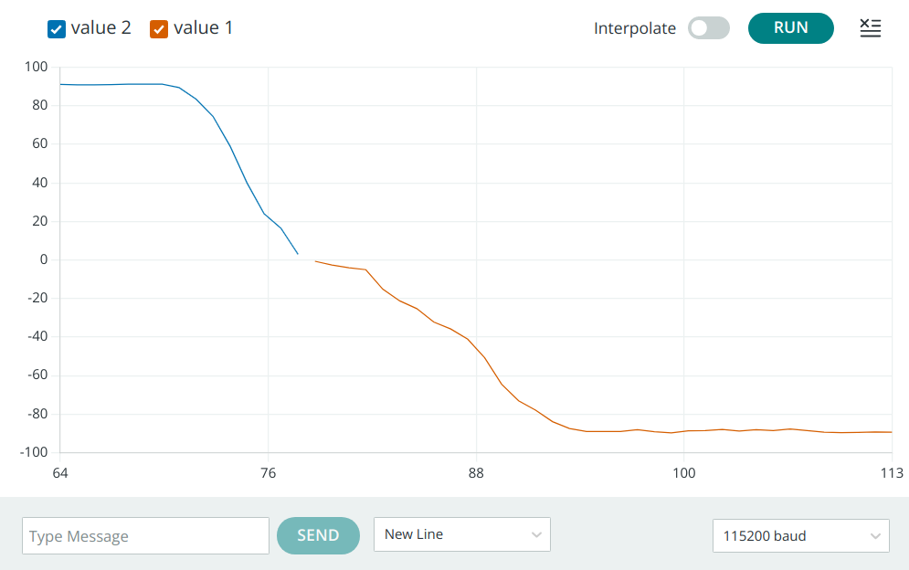The error of gyroscope measurements at these three degrees are shown in table below. It needs to be noticed that because of the gyroscope drift caused by accumulation error over time resulted from the formulas we use to calcuate angles, the error can become quite large as time goes. Hence the measurements here are conducted just as gyroscope initializes.
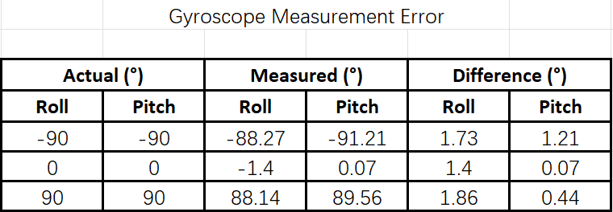To try to investigate the influence from sampling frequency on the accuracy of calculated angles, the frequency is changed from 10 Hz to 100 Hz by adjusting delay time in from 100 ms to 10 ms in the code.
When the sampling frequency is 10 Hz, the pitch and roll values are as follows when I keep the IMU flat on the table:
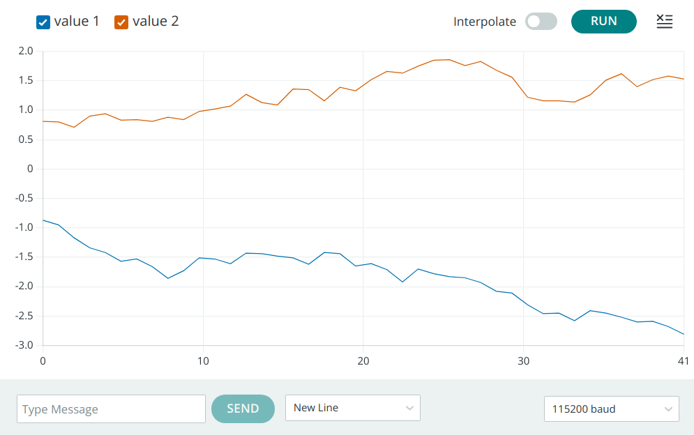After the sampling frequency is changed to 100 Hz, still keep the IMU flat on the table, though it is still not accurate enough, the drift decreases obviously within same period of time.
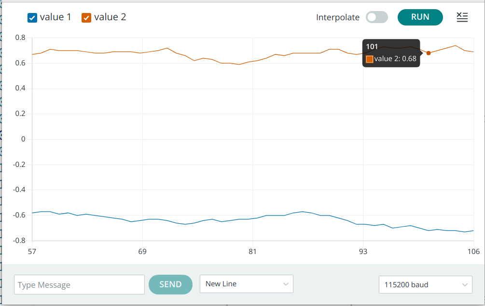To counteract the negative effects of gyroscope drift on the accuracy of measurements, a complementary filter is implemented as the equation below.
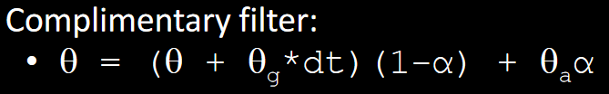 where alpha is a weight coefficient. If alpha is 1, theta would be exactly same as accelerometer results. If alpha is 0, theta would be not changed as gyroscope results. Otherwise, theta is a combination of both gyroscope and accelerometer results.
Since this filter is complementing measurement results of gyroscope, the gyroscope results should dominate, hence theoretically, alpha should be less than 0.5. Also, gyroscope readings are more robust against sudden moves than the readings of accelerometer. After conducting some tests, when alpha = 0.1, with a samll portion of accelerometer data, the drift can be counteracted effectively.
Task 4: Sample data
This task aims to transmit roll and pitch data collected by accelerometer and gyroscope to computer side using BLE. Since BLE is designed to consume minimal power, and one way it does this is by introducing latency into the connection, the latency can cause delays in message transmission, especially if the message is large or complex.
To minimize delays during transmission, all the manually set delays and Serial.print commands are erased. According to the datasheet of IMU, the sampling frequency can be up to 1.125 kHz, but because of the BLE transmission limitation, by counting received data on computer side within a specific period of time, the actual sampling frequency can be computed as around 260 Hz.
The IMU data are combined with ToF distance sensor data together with time-stamp to be stored in an array on the Artemis side, and then send to computer side via BLE. Video below shows the data from sensors are stored in an array in Artemis. Every time the readings update, they are stored and send immediately and the array is emptied to store new readings, hence to prevent running out of memory limitation by BLE transmission.
Eventually, five seconds of ToF and IMU data are sent to computer side via BLE as shown in video below.
Task 5: Cut the Coord
In this task, the cables of 3.7 V, 650 mAh battery are soldered with JST connector so that it can be used as power source of Artemis board and sensors connected to the board. While the 3.7 V, 850 mAh battery is used to power up the motors of robot since the motors comsume more energy than the board and sensors.
Eventually, the battery is connecte to the Artemis with sensors, and they are mounted on the robot with tape as shown in the figure below.

Task 6: Record a shunt
Finally, after the Artemis and sensors are mounted on the robot, I play with the car for a while to test its motors' performance firstly. It is found that when the battery is fully charged, both sides of motors run well as expected. However, when the battery power runs low, for my robot, left side motor speed becomes faster than the other side's.
Then, the Artemis and sensors are powered by the battery, I started the bluetooth connection between Artemis and my computer. I played my robot for a while, made some movements such as go forward and backward, turn left and right, spin around. It needs to be clarified that since the XSHUNT pins of both ToF sensors are connected with Artemis using male and female wire, the wires and sensors may be damaged if I do a flip, therefore, I gave up flip movement.
The process of building bluetooth connection, playing with the robot, collect and send 20 seconds data to the computer side, and plot the data versus time is shown in video below.
The distance data versus time is plotted as below.
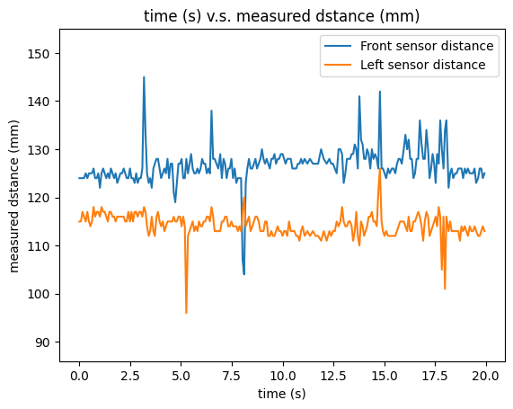The roll and pitch data collected by IMU are plotted as below.
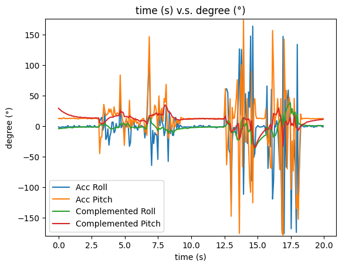Texts and Videos by Zhongqi Tao